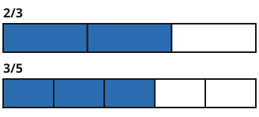
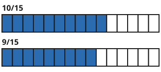

Brüche vergleichen
Mit einem KI-Tutor lernen
Ein KI-Tutor erklärt dir diese Seite und hilft dir bei den Übungen. Wähl deinen Assistenten:
Mit Claude öffnen Mit ChatGPT öffnen Mit Mistral Vibe öffnen
Du nutzt dein eigenes Konto beim Anbieter. Der Assistent ist kein Angebot von lernapps.net: lernapps liefert nur Inhalte und Übungen. Die Wahl gilt für alle Seiten, nur auf diesem Gerät.
Wer hat mehr?
Lena isst einer Tafel Schokolade, Jonas einer gleich großen Tafel. Wer hat mehr gegessen? Das ist schwer zu sehen, denn die Tafeln sind verschieden oft geteilt. Du weißt schon: Wer in mehr Teile teilt, bekommt kleinere Teile. Ein größerer Nenner heißt also nicht, dass der Bruch größer ist.
Anschaulich erklärt

Beide Streifen sind das Ganze. Die Teile sind verschieden groß, darum kannst du die Zähler nicht einfach vergleichen.
Quelle: eigene Zeichnung. Lizenz: CC0-1.0.Du kannst nur Zähler vergleichen, wenn die Teile gleich groß sind. Dafür erweiterst du beide Brüche so, dass sie denselben Nenner haben. Als gemeinsamen Nenner nimmst du eine Zahl, in der beide Nenner aufgehen. Das geht immer, wenn du die beiden Nenner malnimmst: . Dann gilt:

Jetzt sind beide Streifen in 15 gleich große Teile geteilt. Zähle die blauen Teile.
Quelle: eigene Zeichnung. Lizenz: CC0-1.0.- gleichnamig
Brüche mit demselben Nenner heißen gleichnamig. Bei gleichnamigen Brüchen ist der Bruch mit dem größeren Zähler größer.
Lena hat also mehr gegessen als Jonas.
Beispiel
3/4 und 5/6 vergleichen
| Gemeinsamer Nenner | 12, denn 4 und 6 gehen beide in 12 auf |
|---|---|
| Erster Bruch | , erweitert mit 3 |
| Zweiter Bruch | , erweitert mit 2 |
| Vergleich | , also |
Übung
Übung
Drei Beispielaufgaben, jede mit ihrer Lösung:
Aufgabe Nr. 1
Bringe 5/6 und 2/4 auf den gemeinsamen Nenner 12. Wie lautet der neue Zähler des ersten Bruchs?
Tipp
Mit welcher Zahl musst du 6 malnehmen, um 12 zu bekommen? Mit derselben Zahl erweiterst du den Zähler.
Lösung
- Der Nenner wird von 6 zu 12. Der Bruch wird mit 12 : 6 erweitert.
- Zähler: 5 mal 12 : 6 ist 10.
Richtige Antwort: 10
Aufgabe Nr. 2
Bringe 3/12 und 4/8 auf den gemeinsamen Nenner 24. Wie lautet der neue Zähler des ersten Bruchs?
Tipp
Mit welcher Zahl musst du 12 malnehmen, um 24 zu bekommen? Mit derselben Zahl erweiterst du den Zähler.
Lösung
- Der Nenner wird von 12 zu 24. Der Bruch wird mit 24 : 12 erweitert.
- Zähler: 3 mal 24 : 12 ist 6.
Richtige Antwort: 6
Aufgabe Nr. 3
Bringe 6/8 und 1/6 auf den gemeinsamen Nenner 24. Wie lautet der neue Zähler des ersten Bruchs?
Tipp
Mit welcher Zahl musst du 8 malnehmen, um 24 zu bekommen? Mit derselben Zahl erweiterst du den Zähler.
Lösung
- Der Nenner wird von 8 zu 24. Der Bruch wird mit 24 : 8 erweitert.
- Zähler: 6 mal 24 : 8 ist 18.
Richtige Antwort: 18
Übung
Drei Beispielaufgaben, jede mit ihrer Lösung:
Aufgabe Nr. 1
Vergleiche 5/12 und 4/6. Welches Zeichen gehört zwischen die Brüche?
Tipp
Bringe beide Brüche auf den gemeinsamen Nenner 12 und vergleiche dann die Zähler.
Lösung
- Gemeinsamer Nenner: 12.
- 5/12 = 5/12 und 4/6 = 8/12.
- Vergleiche die Zähler 5 und 8: Das Zeichen ist <.
Richtige Antwort: <
Aufgabe Nr. 2
Vergleiche 4/12 und 2/6. Welches Zeichen gehört zwischen die Brüche?
Tipp
Bringe beide Brüche auf den gemeinsamen Nenner 12 und vergleiche dann die Zähler.
Lösung
- Gemeinsamer Nenner: 12.
- 4/12 = 4/12 und 2/6 = 4/12.
- Vergleiche die Zähler 4 und 4: Das Zeichen ist =.
Richtige Antwort: =
Aufgabe Nr. 3
Vergleiche 3/4 und 7/10. Welches Zeichen gehört zwischen die Brüche?
Tipp
Bringe beide Brüche auf den gemeinsamen Nenner 20 und vergleiche dann die Zähler.
Lösung
- Gemeinsamer Nenner: 20.
- 3/4 = 15/20 und 7/10 = 14/20.
- Vergleiche die Zähler 15 und 14: Das Zeichen ist >.
Richtige Antwort: >
Übung
Lösung
3/4 richtige Antwort
Erweitert mit 2 ist 3/4 gleich 6/8, und 6/8 ist größer als 5/8.
5/8
Der Nenner 8 ist größer, aber dann sind die Teile kleiner. Mit gleichem Nenner ist 3/4 gleich 6/8, und 6 ist mehr als 5.
Beide sind gleich groß
Erweitere 3/4 mit 2. Dann siehst du 6/8, und das ist nicht gleich 5/8.
Beide Brüche stehen mit dem Nenner 8 nebeneinander, 6/8 und 5/8. Der Bruch mit dem größeren Zähler ist größer.
Mehr dazu:
Übung
Lösung
Richtige Antwort: Die Aussage stimmt.
Bei gleichem Nenner sind die Teile gleich groß. Der Bruch mit dem größeren Zähler hat mehr dieser Teile.
Mehr dazu: